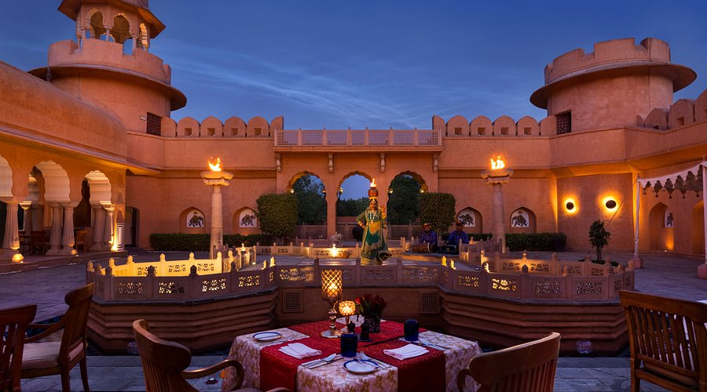

Titan Company Blog

Titan has come a long way since 1984 when we started with one product category.
Today, with over 8,000 employees and about 38,000 in the overall Titan ecosystem, 16 brands and over 2,000 retail stores,
we are as committed as ever to delivering profitable and responsible growth for all our stakeholders.
Titan is India's leading lifestyle company and among the most admired and respected corporates in the country.
We have established leading positions in the Jewellery, Watches and EyeCare categories led by our trusted brands and superior customer experience.
we have also diversified into Wearables, Indian Dress Wear and Fragrances & Fashion Accessories and are driving differentiation in these lifestyle categories,
underpinned by our deep understanding of customer preferences.
When Titan entered the world of watches, it brought about a transformation in this industry.
Titan watches, launched in 1987, blended international class with Indian ethnic designs, providing a diverse range for all occasions.
The collections include a variety of styles, from luxury to sport, meeting the needs of every consumer.
One notable collection is the Titan Raga, a series exclusively designed for women, reflecting modernity with a classic appeal.
Tanishq marked Titan’s entry into the jewellery segment. It started the concept of branded jewellery in India, providing certified, beautifully designed pieces. Each jewellery item shows exceptional craftsmanship, ensuring a perfect mix of traditional and modern designs. Tanishq’s extensive range caters to various occasions, from weddings to everyday wear, ensuring each piece adds a touch of elegance and sophistication to the wearer. The brand stands out for its commitment to purity and quality, ensuring every piece passes rigorous quality standards. Titan Company Ltd. is a shining example of steady growth, new ideas, and varied achievements. Since beginning in 1984, the company has always been devoted to offering top-quality products across different categories. This dedication highlights its respected name in India and beyond. Titan Company Ltd. understands the importance of keeping up with the latest trends and what customers want. This approach ensures that its products consistently meet customer needs and preferences, maintaining its position as a leading lifestyle company in India. A closer look reveals its extensive work, trusted brands, and unwavering commitment to quality and customer satisfaction.